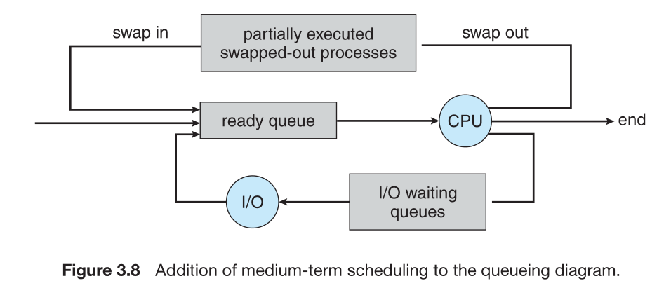

Scheduler 種類
- Long-Term Scheduler
- 執行頻率不高
- 在batch system 中常用, 但time sharing, real time system 不適用
- Short-Term Scheduler(CPU Scheduling, process scheduling)
- 從ready queue中挑出優先權最高的process來獲取cpu的控制權
- Batch System, Time-Sharing System, and Real-Time System皆會使用。
- Medium-Term Scheduling:
當memory空間不足時或某process之 storage time quantum
超過，則會某個process swap out 到disk，等有memory空間或準備好了才swap in。

Time-sharing System常使用(RR)
則Batch, Real-time System中不使用。